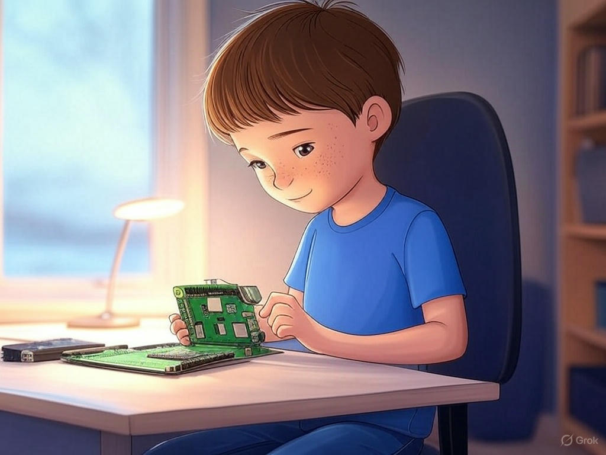
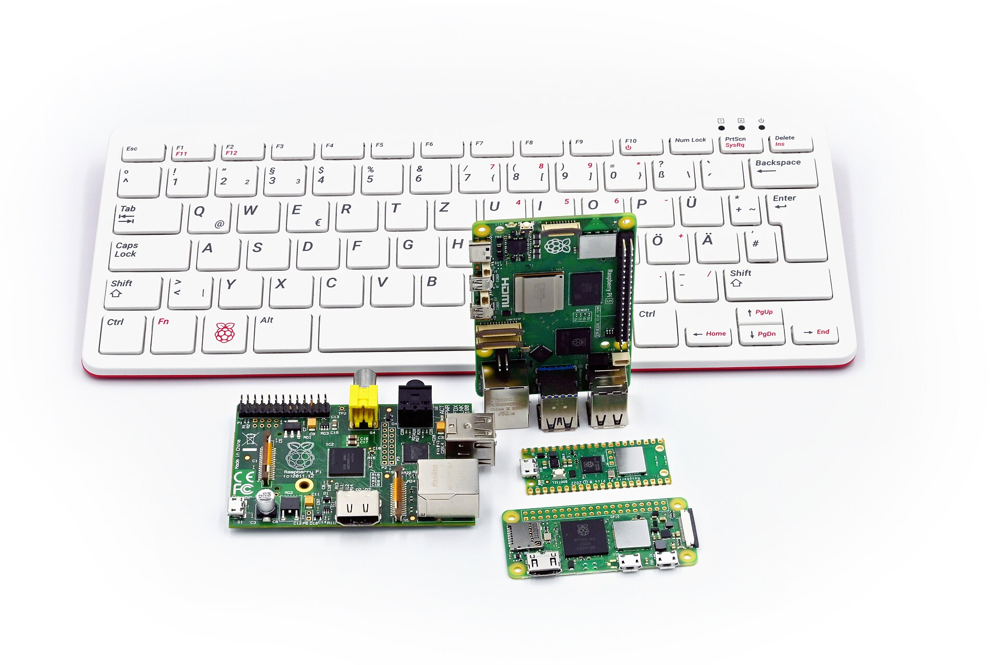
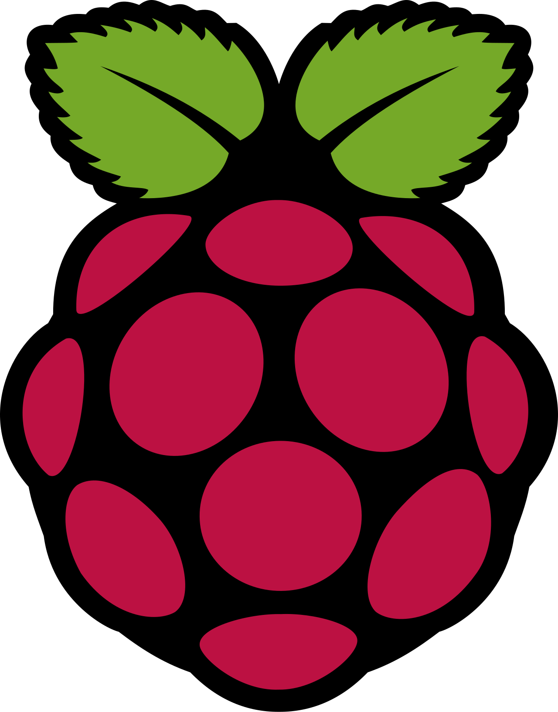
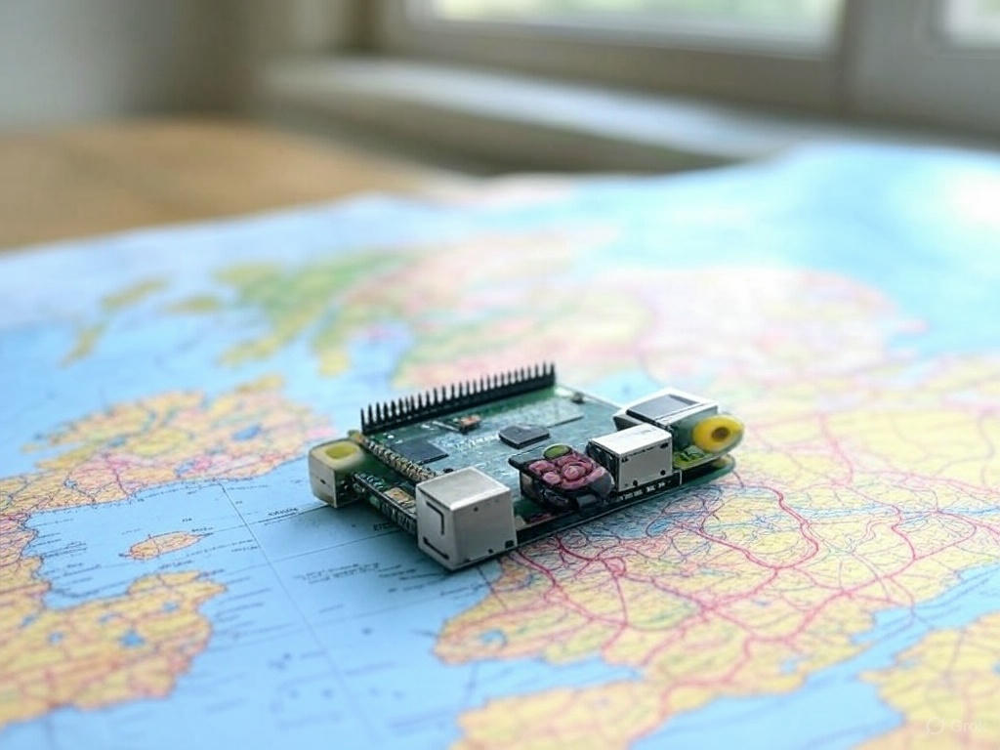
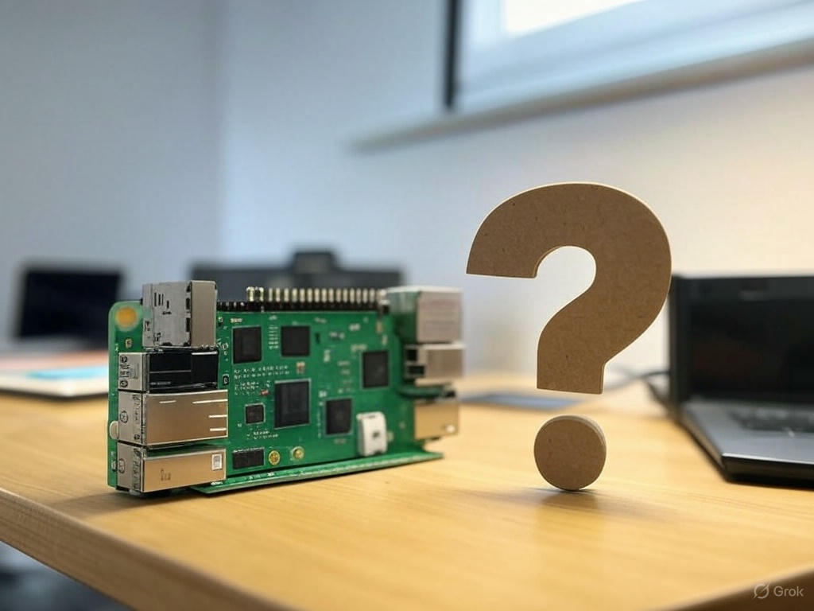
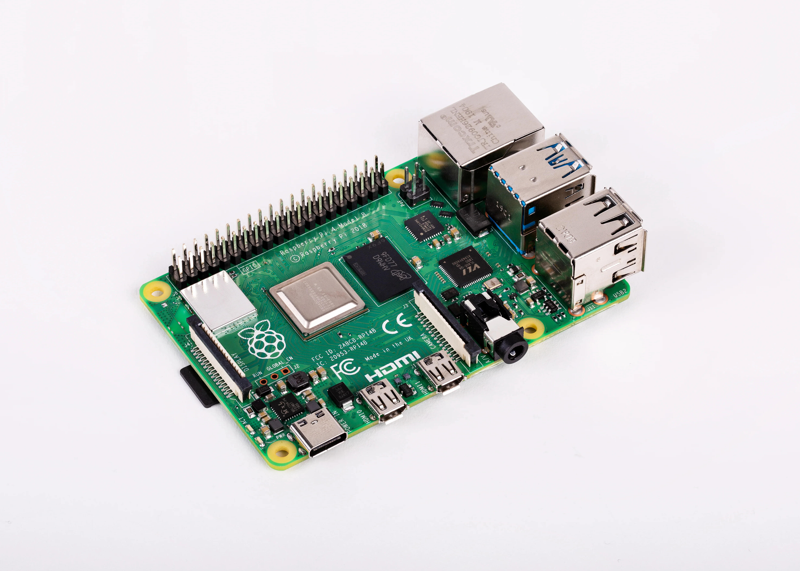

About Raspberry Pi

Who is the Raspberry Pi for?
Raspberry Pi is for anyone curious about learning new skills, whether you're a beginner or an expert. It’s an excellent tool for students and educators who want to teach or learn programming, electronics, and problem-solving in a hands-on, interactive way. It’s also perfect for hobbyists who enjoy DIY projects, from building custom computers to creating home automation systems. Parents and children can use it to explore coding together, and it's a fantastic starting point for those interested in creating video games, smart devices, or even art projects. Raspberry Pi also appeals to professionals who need an affordable platform for prototyping, embedded systems, or IoT (Internet of Things) projects. Whether you're a beginner wanting to learn, a maker building a new invention, or a developer creating custom tech solutions, the Raspberry Pi can serve a variety of purposes and inspire creativity in all kinds of people.
No matter what level of understanding an individual has about computers, the Raspberry Pi is designed to be highly beginner-friendly and easy to learn. For those with little or no experience in technology, the Raspberry Pi provides an excellent entry point into the world of computing and electronics. Its simple setup process, accessible software, and vast library of tutorials make it easy for anyone to get started. The Raspberry Pi's operating system, Raspberry Pi OS, comes with a variety of pre-installed software that helps users learn coding, practice basic computer skills, and explore creative projects. Additionally, the Raspberry Pi community is incredibly supportive, with a wealth of online resources, forums, and step-by-step guides that cater to beginners and provide troubleshooting help. For those with some technical background, Raspberry Pi offers more advanced features, such as the ability to program in multiple languages, interface with hardware, and build custom applications, allowing users to gradually grow their skills at their own pace. Overall, the Raspberry Pi is an ideal platform for learning because it’s flexible, accessible, and offers a hands-on, practical way to develop both software and hardware knowledge, making it suitable for anyone, regardless of their experience level.
What

What is a Raspberry Pi?
A Raspberry Pi is a small, affordable, single-board computer that offers immense versatility for a wide range of projects, from simple coding exercises to complex applications like robotics, home automation, and media centers. It typically runs a Linux-based OS called Raspberry Pi OS but can also support other operating systems like Ubuntu or RetroPie. With various models available, including the Raspberry Pi 4 and Raspberry Pi Zero, users can choose based on their needs for processing power, memory, and size. Its I/O ports, such as HDMI, USB, and GPIO pins, make it ideal for connecting external devices and building hardware projects. Raspberry Pi is not only an accessible tool for hobbyists and tech enthusiasts but also serves as an educational platform to teach coding, electronics, and computer science. With a thriving community and a range of applications in both DIY and industrial settings, the Raspberry Pi is a powerful tool that fuels creativity and innovation at an affordable price.
Using a Raspberry Pi offers several advantages. It's highly affordable, making it accessible to a wide range of users, from beginners to professionals. Its small size and low power consumption make it perfect for projects where space and energy efficiency are important.
When

When was the Raspberry Pi made?
The Raspberry Pi was first conceived in 2006 by Eben Upton, a British computer scientist, along with his colleagues at the University of Cambridge. Their goal was to create an affordable, accessible computer to help students learn programming and computer science. At the time, Upton noticed that fewer students were enrolling in computer science courses at the university and that many lacked the basic skills in programming that were once common among young people. This led him to envision a low-cost, easy-to-use computer that could be used in schools, homes, and communities to teach foundational computing skills. The idea was to provide a device that could help bridge the digital divide and encourage more young people to develop an interest in programming and technology.
After years of development, the first model, the Raspberry Pi Model B, was released in February 2012. It featured a 700 MHz processor, 256 MB of RAM, and HDMI and USB ports, all for a price of $25. The device quickly gained popularity due to its affordability, compact size, and versatility. The Raspberry Pi Foundation, a UK-based charity, was established to oversee the production and distribution of the Raspberry Pi, with the mission of promoting computer science education worldwide. Over time, the Raspberry Pi has undergone several upgrades, with newer models offering more powerful processors, increased RAM, and additional features, while maintaining the same affordable price point. The success of the Raspberry Pi has far exceeded expectations, becoming one of the best-selling computers in history and a popular platform for hobbyists, educators, and professionals alike.

Where was the Raspberry Pi made?
The Raspberry Pi was developed in the United Kingdom, specifically at the University of Cambridge, where Eben Upton and his colleagues worked to create a device that would make computing accessible to everyone, particularly students interested in learning programming and computer science. The development took place at the university's Computer Laboratory, where Upton and his team were initially focused on understanding how to bridge the gap between the increasing use of computers in everyday life and the decreasing interest in computer science education. They aimed to build an affordable, low-power computer that could be used in schools and homes to teach foundational skills in coding and computing.
Once the Raspberry Pi became a reality, the Raspberry Pi Foundation, a UK-based charity, was established to oversee its distribution and development. The foundation’s primary mission was not only to create an affordable computer but also to promote computing education on a global scale. Manufacturing of the Raspberry Pi is done through partnerships with various companies. Initially, the foundation partnered with a UK manufacturer called "Element 14," but due to high demand, the production of later models was outsourced to other factories worldwide, including in China, to meet the global demand. Today, Raspberry Pi boards are sold and used all over the world, with millions of units distributed to individuals, educational institutions, and businesses across continents, making it a globally recognized platform.
Where can I get a Raspberry Pi?
You can purchase a Raspberry Pi from a variety of sources, both online and in physical stores. Official retailers such as the Raspberry Pi Foundation’s website offer direct sales of Raspberry Pi boards, accessories, and starter kits. Additionally, there are numerous online retailers like Amazon, Adafruit, SparkFun, and Pimoroni, where you can find Raspberry Pi models, kits, and related accessories. Many of these retailers also provide international shipping, making it accessible to buyers around the world. In addition to online stores, some electronics or hobbyist shops may carry Raspberry Pi products in-store. For those looking for local options, it’s worth checking out larger tech retailers or electronics stores, particularly those focused on DIY or educational products.
Why

Why should someone use a Raspberry Pi?
There are many compelling reasons why someone should consider using a Raspberry Pi. First and foremost, it's an incredibly affordable and versatile platform, making it accessible to a wide range of people, from beginners to advanced users. At a fraction of the cost of traditional computers, it allows individuals to dive into computing, programming, and electronics without a hefty financial investment. Its low power consumption also makes it ideal for projects where energy efficiency is crucial, such as setting up a home server, creating a personal media center, or building an IoT (Internet of Things) device.
Additionally, the Raspberry Pi is an excellent learning tool, especially for those interested in computer science, coding, and hardware development. With a wealth of tutorials, documentation, and an active community, it's easy for users of all experience levels to get started. Whether you're learning Python, experimenting with circuits and sensors, or building a custom gadget, the Raspberry Pi offers the flexibility and resources to explore countless projects. The device’s ability to run a variety of operating systems and interface with different peripherals (via HDMI, USB, and GPIO pins) makes it perfect for hands-on experimentation. For professionals, Raspberry Pi can be used for prototyping, embedded systems, or low-cost, scalable solutions for automation or digital signage. Whether you're a hobbyist, student, educator, or developer, the Raspberry Pi is a powerful, cost-effective tool that can inspire creativity and innovation.
How

Getting started with Raspberry Pi is simple and accessible for beginners. For those new to technology, the first step is setting up the Raspberry Pi, which involves installing Raspberry Pi OS onto a microSD card and connecting the Pi to a monitor, keyboard, and mouse. Once set up, beginners can explore the basic user interface and begin learning programming with beginner-friendly languages like Python or Scratch. There are plenty of tutorials available to guide users through simple projects, such as building a digital clock or creating basic games, allowing users to develop essential coding skills and get comfortable with the system. The Raspberry Pi’s GPIO pins also provide an easy introduction to electronics, letting users control basic devices like LEDs and sensors, which helps bridge the gap between coding and physical hardware.
As users become more experienced, they can take on more complex projects like building home automation systems, creating media centers, or developing simple robots. The Raspberry Pi is versatile enough to support advanced applications such as web servers, networked systems, and IoT devices, providing a platform to learn about networking, cloud computing, and automation. For those seeking to refine their skills, the Raspberry Pi community offers a wealth of resources, including forums, online tutorials, and project ideas. Whether you're learning programming, diving into electronics, or tackling more advanced system integration, the Raspberry Pi serves as an excellent tool to enhance your tech skills and unleash creativity in building real-world applications.